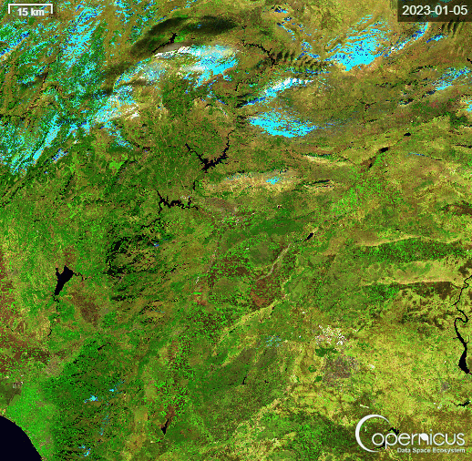

6 Febbraio 2023
Magnitudo 7.8 Mw
Analisi dell'impatto umanitario e ambientale attraverso il monitoraggio satellitare
Scopri di piùLocalizzazione geografica, faglie tettoniche, sequenza sismica
02Copernicus, Sentinel-1 e Sentinel-2 per il monitoraggio
03Vittime, edifici distrutti, aree colpite e dati INGV
04ONU-OCHA, protezione civile e disparità geopolitica
05Prevenzione, cooperazione internazionale e resilienza
6 febbraio 2023, ore 04:17 (ora locale)
Kahramanmaraş, Turchia meridionale
7.8 Mw
17,9 km (fagliazione superficiale)
7.5 Mw ore 13:24, epicentro Elbistan
Il programma europeo Copernicus ha fornito le immagini satellitari fondamentali per valutare i danni in tempo reale, guidare i soccorsi e documentare i cambiamenti del suolo dopo il sisma.
Radar SAR (C-band)
Ottico multispettrale
Emergency Management Service
I dati sulle vittime siriane sono sottostimati a causa dei conflitti in corso e dell'accesso limitato.
Provincia di Hatay: la più colpita, con distruzione di interi quartieri storici.
Il 50% degli edifici crollati in Turchia era privo di adeguati standard antisismici.
Fonte: INGV, OCHA, Copernicus EMS (febbraio–aprile 2023).
La disparità di accesso agli aiuti tra Turchia e Siria rappresenta un caso-studio sulla geopolitica degli aiuti umanitari in zone di conflitto.
I satelliti Copernicus dimostrano che la tecnologia spaziale è ormai uno strumento di gestione delle emergenze globali accessibile e condiviso. Monitorare e documentare i disastri è una forma di partecipazione civica internazionale.
Il 50% degli edifici crollati non rispettava i codici edilizi turchi del 1999. La prevenzione strutturale — più che la risposta emergenziale — salva vite umane: un insegnamento valido anche per l'Italia.
91 nazioni risposero all'appello della Turchia. La solidarietà globale funziona, ma richiede istituzioni forti (ONU, UE, Protezione Civile) e meccanismi pre-esistenti di coordinamento.
La Siria ha ricevuto aiuti sproporzionatamente inferiori rispetto alla Turchia. Conflitti e sanzioni non dovrebbero mai ostacolare il diritto internazionale umanitario nei disastri naturali.
INGV — Istituto Nazionale di Geofisica e Vulcanologia · bollettino sismi 2023
OCHA — UN Office for the Coordination of Humanitarian Affairs · Flash Appeal Feb. 2023
Copernicus Emergency Management Service · Rapid Mapping Activation EMSR586
ESA / Sentinel Hub EO Browser · immagini Sentinel-1 e Sentinel-2
AFAD (Turkey Disaster & Emergency Management) · rapporti ufficiali
Amnesty International · Earthquake in Turkey and Syria: Humanitarian Response, 2023
WHO · Health Cluster Report: Turkey-Syria Earthquake Response, marzo 2023
USGS · Earthquake Hazard Program · dati magnitudo e profondità
Le immagini multispettrali del satellite Sentinel-2 L2A del programma Copernicus permettono di osservare l'evoluzione del territorio colpito nel tempo. Il timelapse mostra la regione epicentrale tra la fine del 2022 e i mesi successivi al sisma: è possibile rilevare variazioni nella copertura del suolo, spostamenti di detriti e modifiche alla rete idrica superficiale causate dalla rottura della faglia.

La composizione falso colore esalta la vegetazione (toni verde brillante), le zone innevate e i corpi idrici (ciano). Le aree di colore bruno-rossastro indicano suolo nudo o superfici alterate dal sisma.
Il monitoraggio temporale tramite immagini satellitari consente di quantificare i danni in modo oggettivo e di pianificare la ricostruzione, anche in aree inaccessibili ai soccorritori.